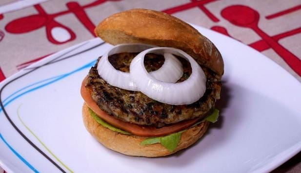

hamburguesa de lenteja y arroz
INGREDIENTES
•100g de lentejas
•100g de arroz redondo o largo
•1 cebolla
•1 zanahoria
•Un diente de ajo
•1 cucharada de pimentón
•50g de pan rallado
•Perejil fresco
•1 hoja de laurel
•Sal y pimienta
•Aceite de oliva
VER RECETA COMPLETA
MAGDALENA
INGREDIENTES
•1 taza de harina de trigo
•1/2 taza de azucar
•1/3 de taza de aceite
•1 taza de leche de soja
•2 cucharadas de leche de soja en polvo(sustituye el huevo)
•2 cucharada de levadura en polvo
•1 cucharada de canela en polvo
•1 cucharada de ralladura de cascara de limon
VER RECETA COMPLETA
Espaguetis con berenjenas y salsa de tomate